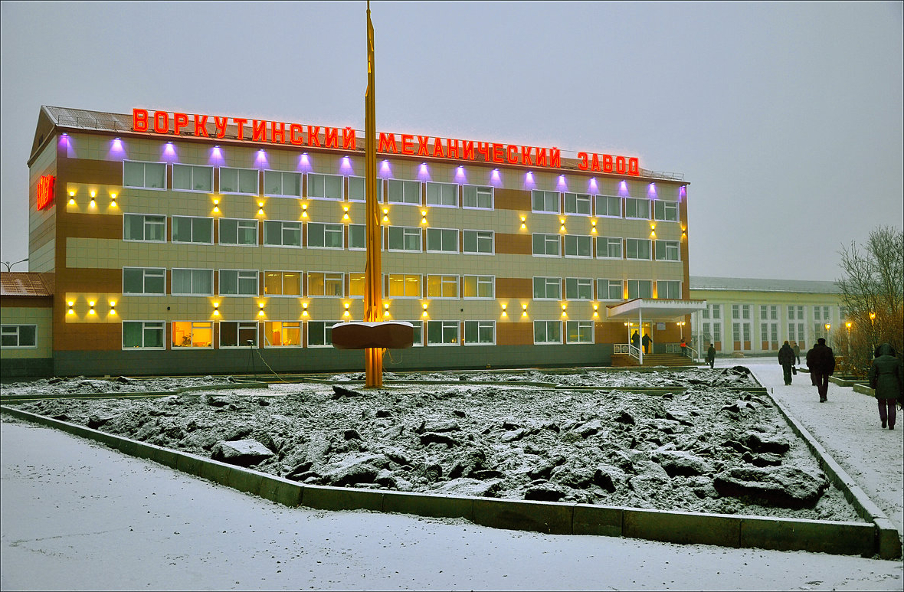

Экономика региона базируется на добыче и переработке горючих полезных ископаемых таких как нефть, газ, уголь. Также в республике добываются черные, цветные и драгоценные металлы. Согласно экспертным данным, валовая ценность запасов полезных ископаемых Республики достигает $11 трлн., или 8% прогнозного потенциала России. В общей сложности промышленность Республики Коми, представлена более чем 30 отраслями, но почти 80% промышленного производства обеспечивают две отрасли.
На долю топливной промышленности приходится около 50% от общего объема промышленного производства. Сейчас в Республике Коми из 152 месторождений углеводородного сырья, числящегося на Государственном балансе, добыча нефти и газа ведется на 87 месторождениях, из которых 65 находятся в промышленной эксплуатации и 22 - в пробной или опытно-промышленной. Наибольший объем нефти содержится на месторождениях Печоро-Колвинской нефтегазоносной области (около 40%). Наиболее выработаны ресурсы нефти Печоро-Колвинской нефтегазоносной области, наименее - Северо-Предуральской.
Второе место по доле в структуре промышленного производства занимает лесопромышленный комплекс (25,5%), который представлен организациями лесозаготовительной, деревообрабатывающей и целлюлозно-бумажной промышленности. Заготовка древесины сосредоточена в бассейнах рек Вычегды, Сысолы и Мезени. Основные районы лесозаготовок на территории Республики Коми - Удорский, Койгородский, Усть-Куломский, Корткеросский, Прилузский, Сыктывдинский и Сысольский.
Деревообрабатывающая промышленность Коми представлена лесопильным производством, производством фанеры, плит древесноволокнистых, древесностружечных и средней плотности МДФ, производством деревянных строительных конструкций, включая столярные изделия и деревянной тары. Отрасль представлена следующими предприятиями:
ЗАО «Жешартский фанерный комбинат» - специализируется на производстве клееной фанеры, древесных плит и панелей;
ООО «Сыктывкарский фанерный завод» - один из крупнейших в России производителей большеформатной фанеры и мебельной плиты на древесной основе;
ООО «Завод ДВП» (Княжпогостский район);
ЗАО «Леском».

Машиностроительный комплекс в республике представляют около 200 предприятий, которые производят широкий спектр продукции.
ОАО «Ухтинский механический завод» выпускает грузоподъемное оборудование: строительные башенные краны в северном исполнении, краны-погрузчики, оборудование для нефтяной и газовой промышленности, конвейерное шахтное оборудование;
«Воркутинский механический завод» - металлообрабатывающее предприятие с полным циклом ремонтного производства;
«Интинский ремонтно-механический завод» производит оборудование для угледобывающей промышленности.
Наиболее крупными промышленными предприятиями республики, на которые приходится около 60% промпроизводства, являются:
ООО «Лукойл-Коми» - является крупнейшим на Северо-западе России недропользователем;
ОАО «МБП Сыктывкарский ЛПК» - один из крупнейших целлюлозно-бумажных комбинатов России;
ОАО ЭК «Комиэнерго» - осуществляет транспортировку электрической энергии на территории Республики Коми;
ОАО «Воркутауголь» - крупнейшая угледобывающая компания России.